Retail Insights 360°
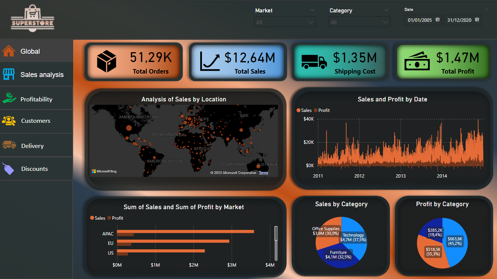
Objectif du projet :
Ce projet a été conçu pour illustrer ma capacité à prendre en charge un projet d’analyse de données de A à Z,
en passant par la création d’un datawarehouse, la préparation des données (SQL), la modélisation des données,
et la création de tableaux de bord interactifs avec Power BI. Le projet visait à répondre aux besoins
spécifiques d'un client fictif dans le secteur du retail, en se concentrant sur l’analyse des ventes,
des profits, des clients, des livraisons et des promotions, tout en assurant un design UX/UI optimal
et un haut niveau d'interactivité.
Rencontre avec les Clients
Rédaction du Cahier des Charges
La première étape a consisté à identifier les besoins spécifiques des utilisateurs finaux,
qu’ils soient stratégiques ou opérationnels.
Cahier des charges :
| Section |
Description |
Détails Techniques |
Visuels et Fonctionnalités |
| 1. Rapport global |
Vue d’ensemble des indicateurs clés pour suivre l’activité globale. |
Total des ventes, Nombre de commandes, Coût de livraison, Profits |
Carte : ventes par localisation
Graphique : ventes par date, marché, catégorie
Filtres : date, marché, catégories |
| 2. Rapport sur les ventes |
Analyse des performances de ventes actuelles et comparatives. |
Ventes actuelles et de l’année dernière, Différence des ventes, Meilleures ventes |
Graphiques : ventes par année, catégorie, sous-catégorie, marché |
| 3. Rapport sur les profits |
Focus sur la rentabilité de l’activité. |
Profits totaux, par catégorie, marché, pays/régions |
Diagrammes : profits par catégorie, marché
Détails tabulaires : profits par sous-catégorie |
| 4. Rapport sur les clients |
Analyse des clients et de leur impact financier. |
Revenus générés, Nombre de clients, Classement des meilleurs/mauvais clients |
Graphiques : profits par type de client, catégorie, sous-catégorie |
| 5. Rapport sur la livraison |
Suivi des indicateurs liés à la logistique et performance des livraisons. |
Temps moyen de livraison, Coût moyen, Commandes urgentes |
Classements : pays (coût/délai livraison)
Graphiques : coûts/délais par localisation |
| 6. Rapport sur les promotions |
Analyse des promotions et de leur impact sur les ventes et profits. |
Ventes avec/sans promotion, Moyenne des promotions |
Graphiques : promotions vs ventes, commandes par promotion, promotions vs profits |
Remarque supplémentaire:
Intégration des filtres dynamiques: chaque rapport devra inclure des filtres interactifs pour affiner les analyses. Les filtres principaux incluent :
Dates (jour, mois, année),Catégories,Marchés
Cohérence visuelle : Couleurs standardisées pour les catégories et les marchés.
Police et taille des textes adaptées à une lecture claire.
Performance : Le tableau de bord doit être optimisé pour un chargement rapide malgré des volumes de données importants.
Exportation : Possibilité d’exporter les visuels et données sous format Excel ou PDF.
Accessibilité : Le tableau de bord doit être consultable via desktop et mobile.
Téléchargement et Exploration des Données
On va exploiter les données du "Superstore" issues du site Kaggle (https://www.kaggle.com/datasets/anandaramg/global-superstore)
. On va utiliser un CSV contenant des dizaines de milliers de lignes.
Ces données détaillent les ventes d’un magasin fictif dans le secteur du retail.

Une exploration des données a permis de repérer les anomalies et de mieux comprendre leur structure avant
de commencer la phase de nettoyage
Création du Data Warehouse sur SSMS
Création des Tables : J'ai créé une structure de datawarehouse sur SQL Server Management Studio (SSMS),
en m’appuyant sur une architecture de type modèle en étoile. Ce modèle consiste en une table de faits
et plusieurs tables de dimensions, créant ainsi une relation de type "1 à plusieurs" entre chaque table
de dimension et la table de faits.
Aperçu du code de création de table et de l'insertion des données :
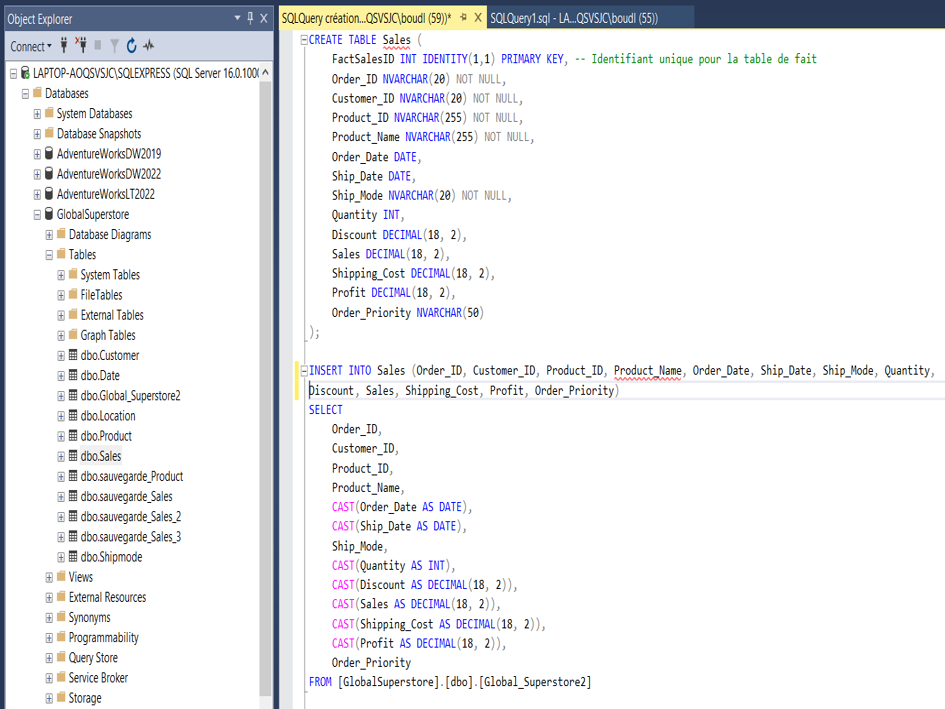
J'ai créer les différentes tables du modèle et charger les données du fichier CSV dans chaque table.
Cette étape a permis de structurer les données de manière logique avant d’entamer les transformations nécessaires.
Data Cleaning et Préparation des Données (SQL)
Détection et élimination des doublons : Un contrôle rigoureux a été effectué pour éliminer les doublons dans
les données brutes et garantir l'intégrité des informations.
Ci-dessous un exemple de détection de doublons et de modif, la détection des doublons sur la colonne Product_ID ainsi que la sauvegarde de la table avant
la création d'une nouvelle colonne, qui sera la concaténation de Product_ID et Product_Name, afin
d'éliminer les doublons et de disposer d'une clé primaire.

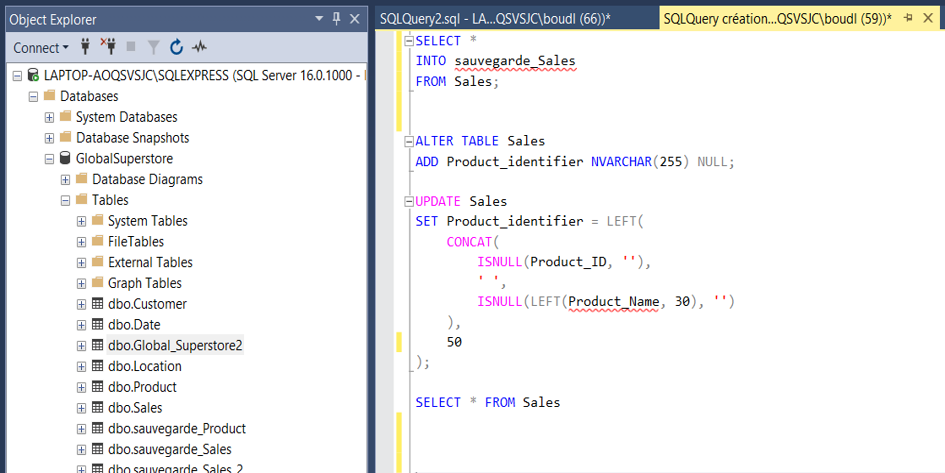
Création des Clés Primaires et Étrangères : Des clés primaires et étrangères ont été définies
pour chaque table de faits et de dimensions, garantissant des relations correctes entre
les différentes tables du modèle. Ci-dessous un exemple de la modification de la table product
et établissement de la clé primaire
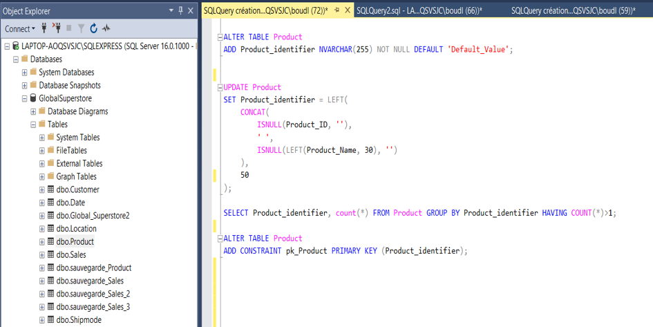
Import des Données dans Power BI
Une fois la structure du datawarehouse en place et les données nettoyées, celles-ci ont été importées dans Power BI.
Grâce aux clés primaires et étrangères définies précédemment dans SSMS, Power BI a automatiquement
créé un modèle relationnel entre les différentes tables, facilitant ainsi l’analyse des données.
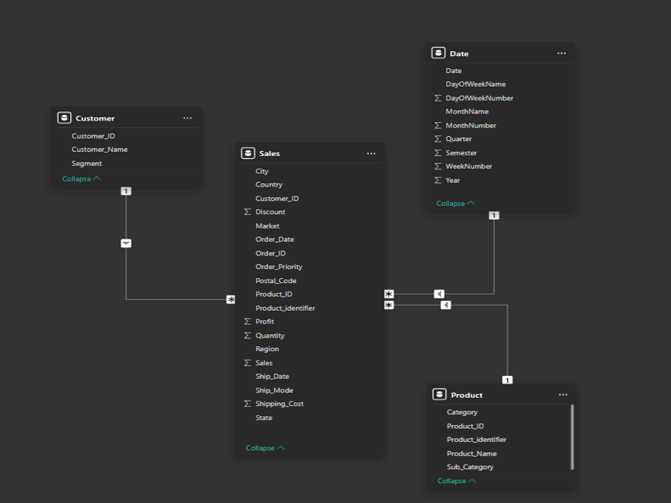
Transformation des Données avec Power Query
Nettoyage et Préparation
Plusieurs transformations ont été appliquées via Power Query M pour améliorer la qualité des données,
comme le renommage de certaines colonnes et la gestion des valeurs nulles.

Création des visualisations et des mesures DAX dans Power BI
Création des visuels dans Power BI
Exemples de visualisations créées avant le design UX/UI :
Graphiques à barres pour les ventes par produit.
Cartes KPI pour les indicateurs clés comme le total des ventes et des profits.
Diagrammes circulaires pour la répartition des clients par segment.
Tout cela en respectant le cahier des charges définis précedement avec les clients.
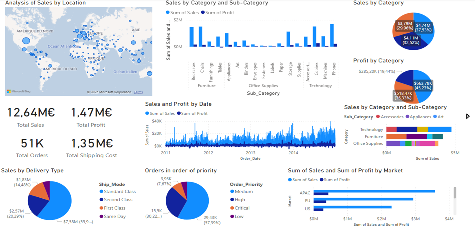
Création des mesures DAX
J’ai conçu des mesures DAX pour répondre aux besoins identifiés dans le cahier des charges.
On a séparé ces mesures DAX des tables dans un dossier Mesures.
Voici un aperçu du dossier mesure "Folder Measures" :
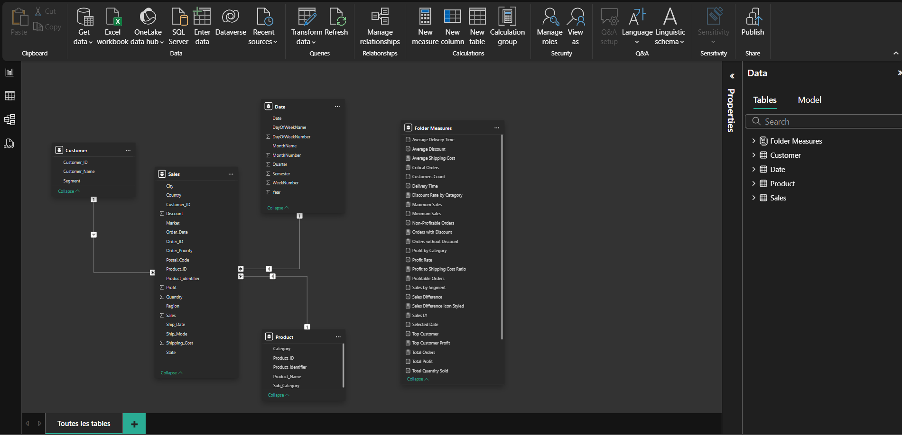
Voici un aperçu du code DAX de quelques mesures :
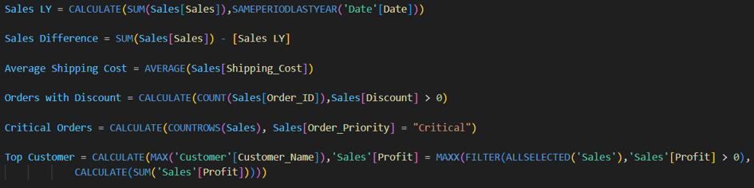
Conception du Design UX/UI
Le design des rapports et du tableau de bord a été pensé de manière à être simple,
clair, et intuitif. L’objectif était de garantir une bonne expérience utilisateur,
en favorisant une navigation fluide entre les différentes sections des tableaux de bord,
tout en affichant les informations les plus pertinentes de manière visuellement attractive.
La palette de couleurs choisie était cohérente avec l’image de marque du client fictif et
a été testée pour assurer une lisibilité optimale.
Ci-dessous figurent les différents rapports qui composent le tableau de bord du client,
conformes aux points énoncés dans le cahier des charges.
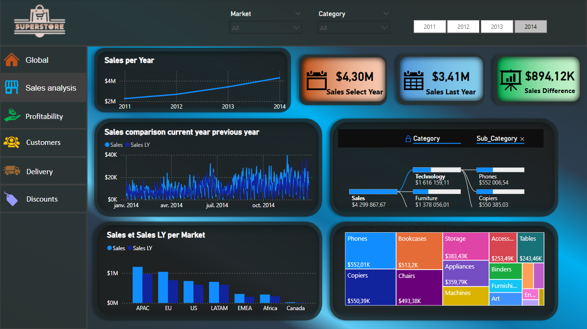
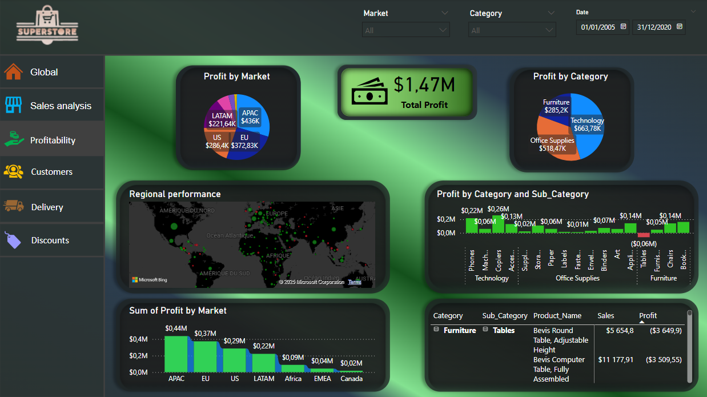
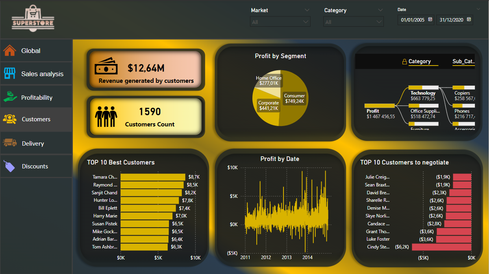
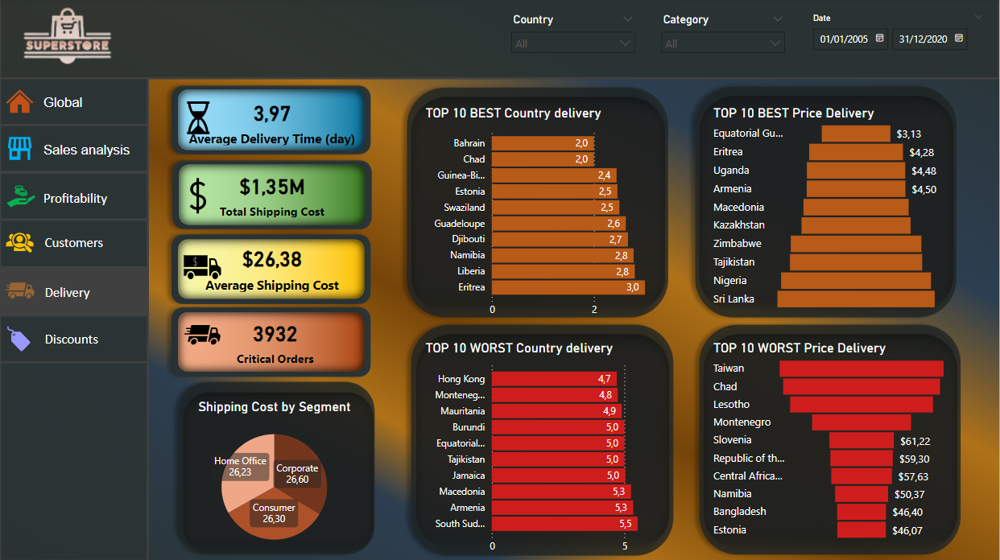
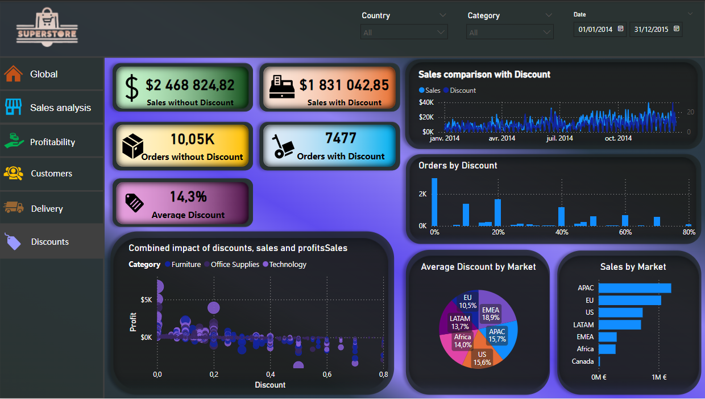
Conclusion
Ce projet montre mon expertise dans la gestion des données, la création d'un data warehouse,
la transformation de données et la création de rapports interactifs. J'ai mis en place un tableau de bord complet
permettant au client fictif d'analyser efficacement ses ventes, ses profits, ses délais de livraison,
et les performances de ses promotions. Ce projet démontre ma capacité à travailler sur toutes les étapes
du cycle de vie des données, en utilisant des outils comme SQL, Power BI et Power Query,
tout en garantissant un design UX/UI adapté aux besoins des utilisateurs finaux.
Ce projet illustre également ma capacité à répondre aux demandes spécifiques d’un client,
à optimiser des données, et à fournir des résultats visuels clairs et percutants grâce
à une approche orientée client et résultats.
Merci pour votre attention.